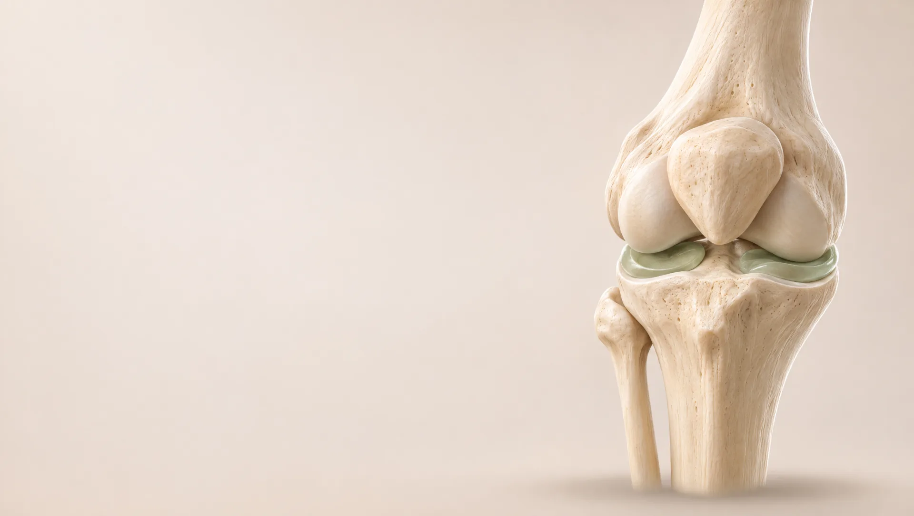
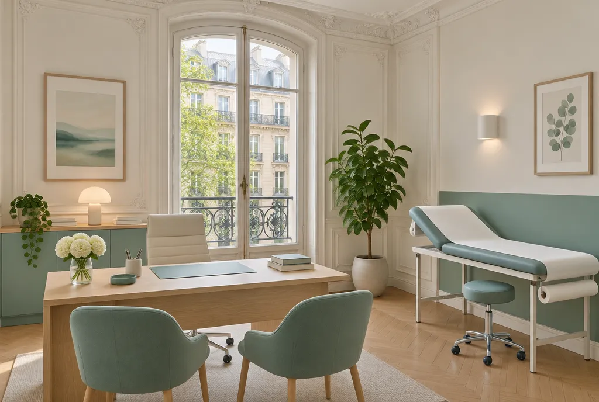

Chirurgienne orthopédiste · Hanche et genou
Dr Claire Ventadour
La hanche et le genou, à Paris 15e. Chaque option est expliquée, y compris celles qui évitent l’opération.
Secteur 2, OPTAM (dépassements d’honoraires modérés ; remboursement sur la base du secteur 1) · consultation 50 à 60 € · carte bancaire, chèque, espèces · Tiers payant : CSS, AME, accident du travail · Tous les honoraires
Le Dr Ventadour
Expliquer chaque option, avec et sans chirurgie
Installée à Paris 15e depuis 2014, elle consacre sa pratique à la hanche et au genou. Avant toute intervention, vous recevez une information écrite et un devis, et vous prenez le temps de décider.
Interventions
Ce que soigne le Dr Ventadour


Votre parcours
De la première consultation au suivi
La consultation
Examen, lecture de vos radios ou de votre IRM, et toutes les options discutées.
La décision
Une information écrite, un devis, et le temps de réfléchir.
L’intervention
En clinique, avec un lever précoce après l’opération.
Le suivi
Rééducation et consultations de contrôle aux étapes clés.
Où consulter
Deux lieux de consultation à Paris 15e

Cabinet de consultation
12 rue de l’Exemple, 75015 Paris
Lundi et jeudi, de 9 h à 18 h, sur rendez-vous.
Clinique partenaire (nom fictif)
48 avenue de l’Exemple, 75015 Paris
Consultations le mardi, de 14 h à 19 h. Interventions programmées en semaine.
Prendre rendez-vous avec le Dr Ventadour
Secteur 2, OPTAM (dépassements d’honoraires modérés ; remboursement sur la base du secteur 1) · consultation 50 à 60 € · carte bancaire, chèque, espèces · Tiers payant : CSS, AME, accident du travail · Tous les honoraires